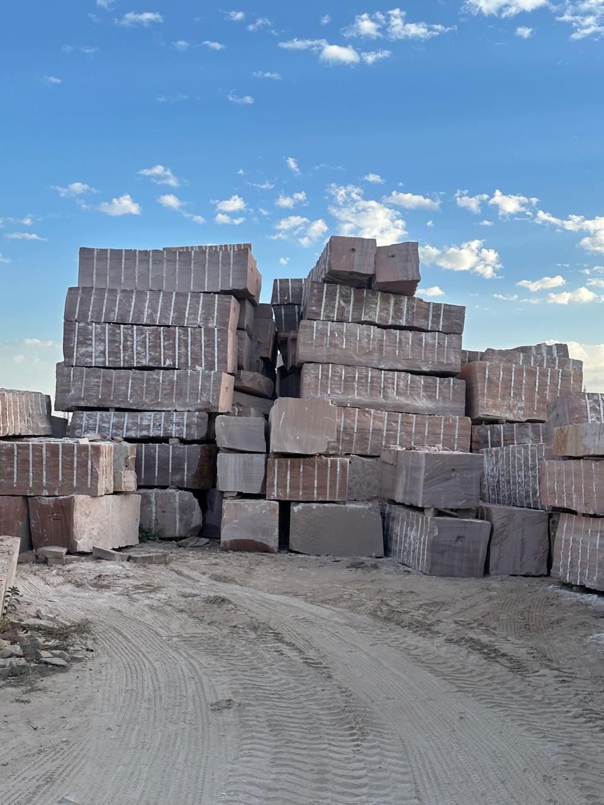

Durability for outdoor use
Suitable for climates that demand resilience across heat, temperature shifts, and time.
Material catalogue
Premium buyers judge sandstone by more than colour. They look at how it reads on the facade, how it wears under foot, and whether it supports the design intent of the project.
Every order is custom cut and custom finished to project requirement, with the final recommendation guided by tone, application, and architectural intent.


Collection 01
Subtle tones. Refined spaces.
Our most premium variant — selected for luxury architectural applications where tonal clarity, refinement, and material presence are essential.
A quieter expression of Chittar sandstone with a lighter visual tone suited to contemporary facades, outdoor terraces, calm residential palettes, and premium landscape design.

Collection 02
Strength defined in every layer.
Richer in expression and more assertive in architectural presence, Red sandstone is well suited to projects that want historical depth, visual warmth, and long-term exterior confidence.

Collection 03
Natural warmth. Designed to belong.
Brown sandstone brings a grounded, earth-connected tone to open-air projects and landscape environments where the stone should feel premium without feeling forced.
Why architects specify it
Suitable for climates that demand resilience across heat, temperature shifts, and time.
Its processing potential supports clean project execution and consistent architectural detailing.
A natural benefit for paving, pathways, terraces, and landscape-focused applications.
Appropriate for projects that want a cohesive stone language across multiple spaces.
Application focus
Premium buyers judge sandstone by how it performs on the project, how it reads at scale, and how well it supports the intended architecture. This collection is presented around those decisions.
For elevations that need material depth, weathering confidence, and a lasting architectural presence.
For pathways, terraces, and open circulation areas where durability must hold up every day.
For gardens, courtyards, and resort environments that need a natural, premium texture.
Every tone can be adapted to the final brief through size, finish, and cutting specification.
Need help choosing?